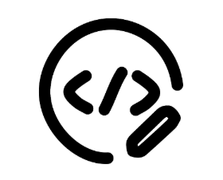

Documento de Entrega Personalizado
Este módulo permite personalizar el informe de entrega de productos (albarán) en Odoo 17.
Ideal para empresas que desean adaptar sus reportes a una imagen corporativa más clara y profesional.
Características
- Personaliza completamente el reporte
stock.report_delivery_document.
- Añade nuevas columnas como el código interno del producto.
- Soporte para estilos, estructuras dinámicas, títulos y más.
- Preparado para extensiones futuras: ubicación, totales, firmas, etc.
- Compatible con Odoo 17 Community y Enterprise.
Vista previa del reporte PDF
Autor
JMA
Sitio web: https://sites.google.com/jmasas.com/jma